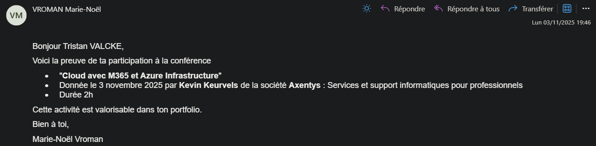

Conférence Cloud avec M365 et Azure Infrastructure
Participation à une conférence organisée à l'EPHEC sur les technologies Cloud de Microsoft. Cette session a abordé les solutions Microsoft 365 et l'infrastructure Azure, deux piliers essentiels du Cloud computing moderne. L'intervenant a présenté les meilleures pratiques, les cas d'usage en entreprise, ainsi que les aspects de sécurité et de gestion des ressources dans le Cloud. Une excellente opportunité de découvrir les outils professionnels utilisés par les entreprises pour leur transformation numérique.
Preuve de participation

Contenu de la conférence
☁️ Microsoft 365 (M365)
- Présentation de la suite Microsoft 365
- Outils de collaboration (Teams, SharePoint, OneDrive)
- Gestion des identités et accès (Azure AD)
- Sécurité et conformité dans M365
- Automatisation avec Power Platform
🏗️ Azure Infrastructure
- Introduction aux services Azure
- Machines virtuelles et conteneurs
- Stockage et bases de données Cloud
- Réseaux virtuels et sécurité
- Surveillance et optimisation des coûts
🎓 Connaissances acquises
- Architecture Cloud moderne
- Concepts de SaaS, PaaS et IaaS
- Bonnes pratiques de sécurité Cloud
- Gestion des ressources et coûts
- Stratégies de migration vers le Cloud
- Outils de développement Azure
💼 Applications pratiques
- Cas d'usage en entreprise
- Transformation digitale
- Travail collaboratif à distance
- Hébergement d'applications web
- Solutions de sauvegarde et reprise
- Automatisation des processus métier
Thèmes abordés
🔐 Sécurité Cloud
Présentation des mécanismes de sécurité intégrés dans Azure et M365, incluant la gestion des identités, l'authentification multifacteur, et la protection des données sensibles.
📊 Gouvernance et Conformité
Stratégies de gouvernance des ressources Cloud, respect des normes RGPD, et outils de conformité Microsoft pour garantir la protection des données.
🚀 DevOps et CI/CD
Introduction aux pratiques DevOps avec Azure DevOps, pipelines de déploiement automatisés, et intégration continue pour accélérer le développement.
💰 Optimisation des coûts
Techniques pour surveiller et optimiser les dépenses Cloud, utilisation des outils Azure Cost Management et stratégies de dimensionnement des ressources.